PICNIC-2694 — 투표 팝업 짧은·가로형 뷰포트 수정 전후 캡처
안드로이드 에뮬레이터 실측 · 뷰포트 3종 × 다이얼로그 2종 × before/after = 12장
1. 무엇을 캡처했나
짧은 창(플립 플렉스 모드 상단), 휴대폰 가로, 태블릿 1/3 분할 세 가지 뷰포트에서
금액 입력란 · 전체 사용 · 투표 버튼이 스크롤 없이(스크롤 오프셋 0에서)
보이는지를 수정 전(2e5ccdc20)과 수정 후(467930fdd)로 나눠 실제로 렌더해 담았다.
하네스는 실제 앱 플로가 아니다.
실제 투표 팝업까지 가려면 로그인이 필요해 자격증명 없이는 재현할 수 없다. 그래서 임시 진입점에서
프로덕션 진입 함수인 showVotingDialog() / showJmaVotingDialog() 를
목(mock) 데이터로 직접 호출했다. 다이얼로그 위젯과 그 showDialog 라우트,
ScreenUtil 기하, 테마·폰트·이미지 자산은 모두 프로덕션과 동일하고, 잔액·아티스트·투표 모델만
목으로 주입했다(별사탕 3,000 + 보너스 50, JMA 투표권 100, 아티스트 지민/BTS).
이 임시 진입점은 캡처 후 삭제했으며 커밋하지 않았다.
기하를 프로덕션과 맞춘 방법
.w / .h / .r 환산 배율이 달라지면 이 티켓의 레이아웃 예산 자체가
달라지므로, 하네스는 테스트 기본값(375×812)이 아니라 프로덕션 값을 그대로 썼다.
ScreenUtilInit(
designSize: kAppDesignSize, // Size(393, 892)
minTextAdapt: true,
splitScreenMode: kAppSplitScreenMode, // true
)
theme: voteThemeLight // 프로덕션 vote 포털 테마
Environment.initConfig('prod') // config/prod.json 의 실제 색상 토큰2. 캡처 환경
| 에뮬레이터 | AVD picnic_staging / emulator-5554 · Android 15 (API 35) · sdk_gphone64_arm64 · google_apis_playstore |
|---|---|
| 기본 디스플레이 | 1080 × 2400 px @ density 420 (dpr 2.625) |
| 빌드 | debug APK (릴리스 APK 는 VM 감지로 즉시 종료되어 사용 불가) |
| dart-define | ENVIRONMENT=prod PANGLE_ENVIRONMENT=prod PAYMENT_ENVIRONMENT=prod DISABLE_VM_CHECK=true |
| 로케일 | ko |
| 캡처 | adb -s emulator-5554 exec-out screencap -p (무손실 PNG, 리사이즈·압축 없음) |
뷰포트 3종 — 지정값과 앱이 실제로 본 값
wm size 로 디스플레이를 바꾸고 density 420 을 유지했다. 아래 “앱 실측 dp” 는
앱이 MediaQuery.of(context).size 로 직접 보고한 값을 logcat 으로 읽은 것이다
(계산값이 아니라 측정값).
| 뷰포트 | 목표 dp | wm size (px) | density | 앱 실측 dp | dpr | 앱 실측 padding |
|---|---|---|---|---|---|---|
| flip-flex 플립 플렉스 상단 |
412 × 500 | 1081x1313 |
420 | 411.81 × 500.19 |
2.625 | top 28.2 / bottom 24.0 |
| phone-landscape 휴대폰 가로 |
851 × 393 | 2234x1032 |
420 | 851.05 × 393.14 |
2.625 | top 28.2 / bottom 24.0 |
| tablet-third 태블릿 1/3 분할 |
375 × 834 | 984x2189 |
420 | 374.86 × 833.90 |
2.625 | top 47.2 / bottom 24.0 |
세 뷰포트 모두 density 420 이 그대로 수용됐고, 앱 실측 dp 가 목표값과 0.2 dp 이내로 일치한다.
각 뷰포트 변경 뒤에는 앱을 force-stop 후 콜드 스타트해 첫 프레임부터 새 기하가 반영되게 했다.
캡처가 끝난 뒤 wm size reset / wm density reset 으로 1080×2400 @420 으로 원복했다.
캡처에 보이는 어두운 회색 배경은 하네스의 홈 화면(팝업을 여는 버튼 두 개)이다. 프로덕션에서는 이 자리에 투표 목록 화면이 온다. 팝업 자체와 반투명 barrier 는 프로덕션과 동일하다.
3. 캡처 12장
3-1. flip-flex — 412 × 500 dp (플립 플렉스 상단)
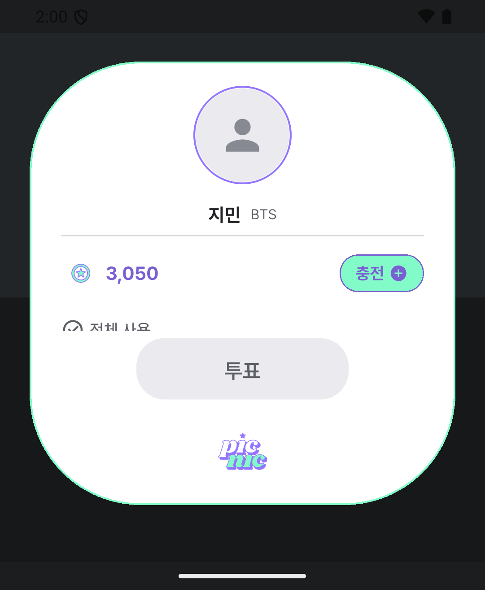
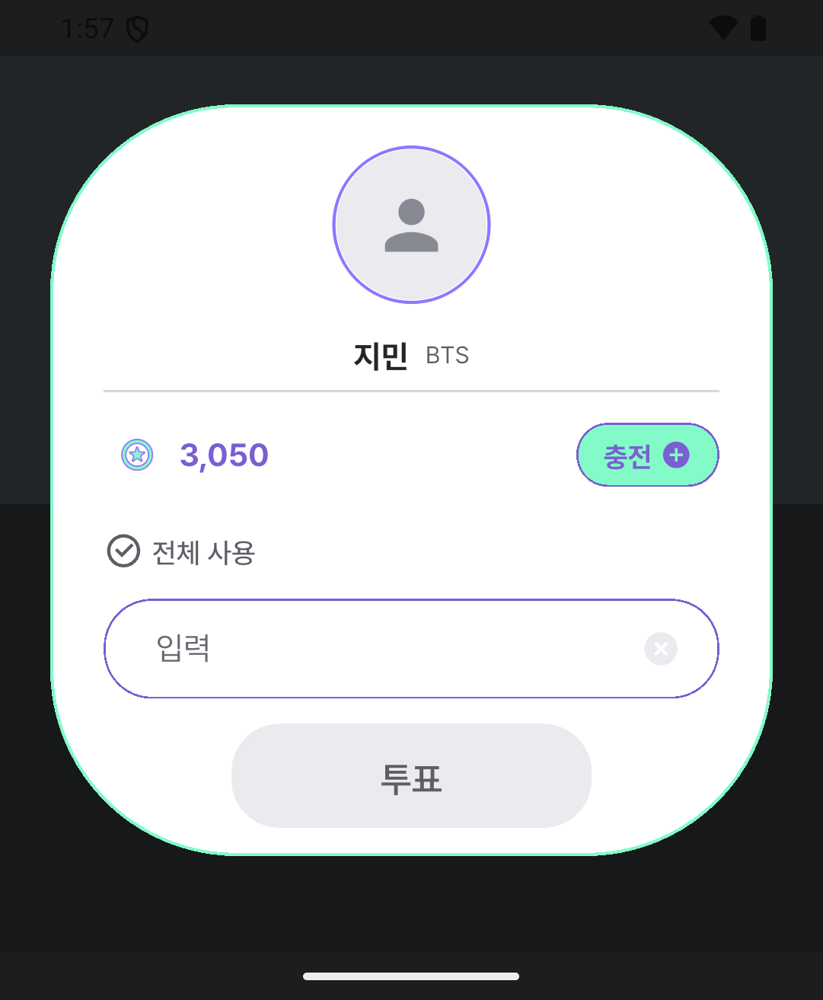
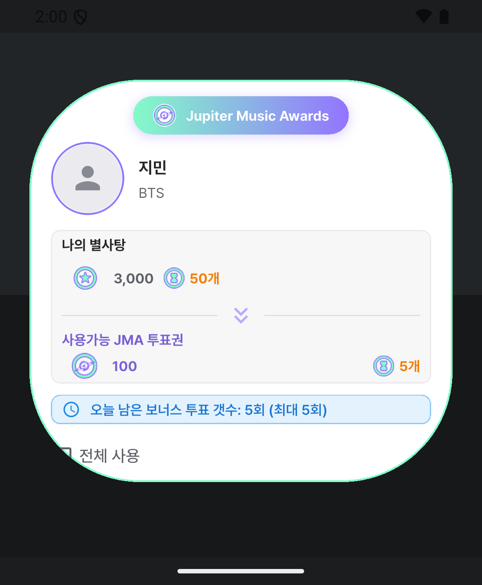
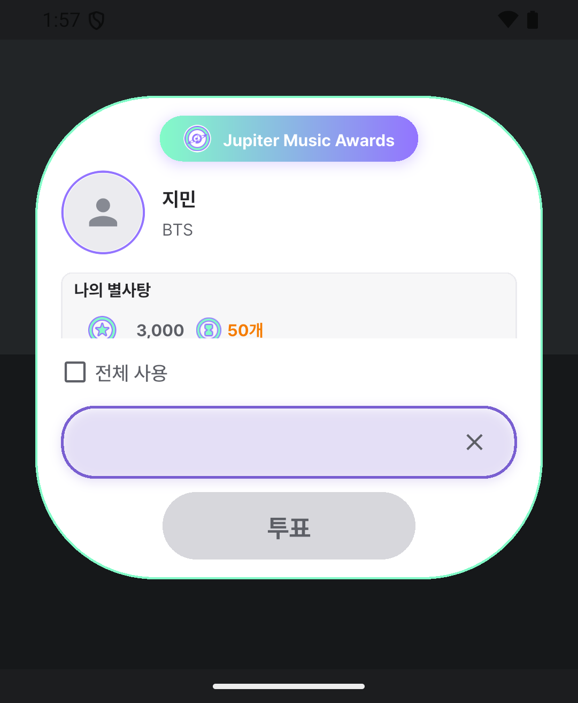
3-2. phone-landscape — 851 × 393 dp (휴대폰 가로) · 가장 심한 케이스
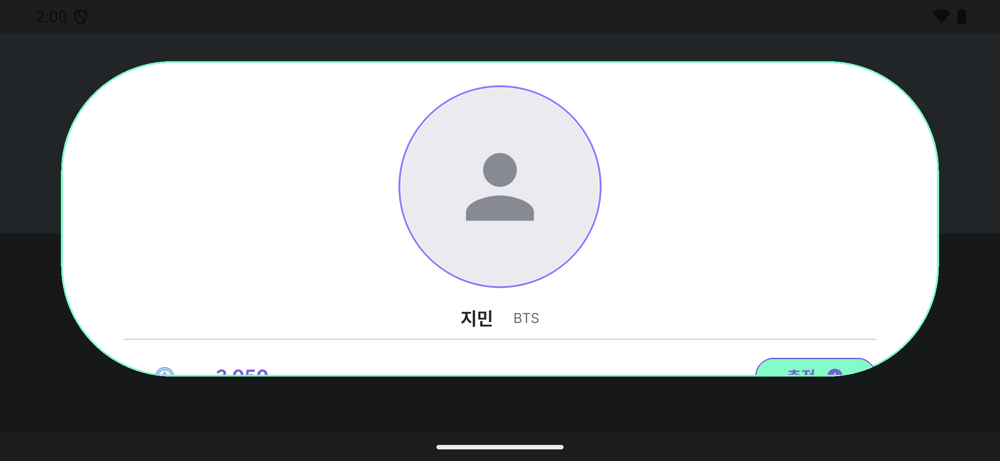
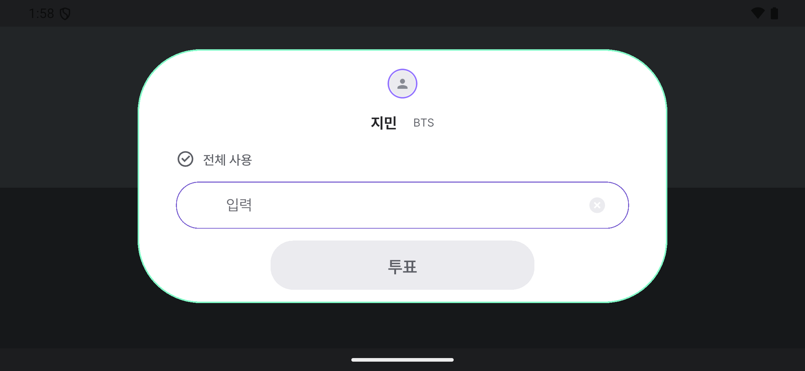
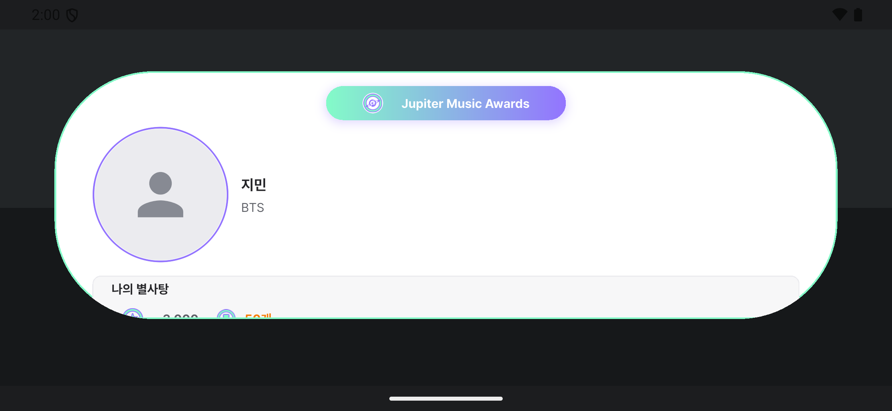
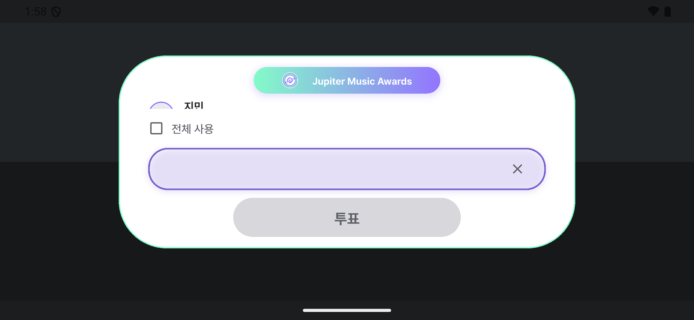
3-3. tablet-third — 375 × 834 dp (태블릿 1/3 분할) · 회귀 없음 대조군
이 뷰포트는 수정 전에도 세 컨트롤이 모두 보였다. 수정이 멀쩡하던 화면을 망가뜨리지 않았는지 확인하는 대조군이다. 두 쌍 모두 before/after 가 정상이며, 바뀐 것은 보조 요소의 배치뿐이다.
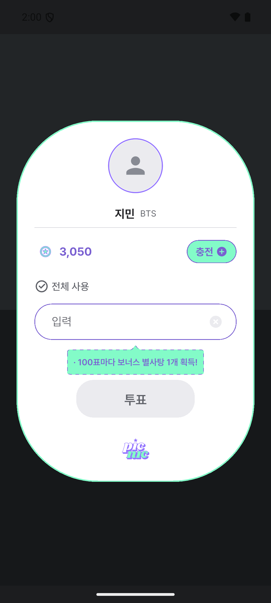
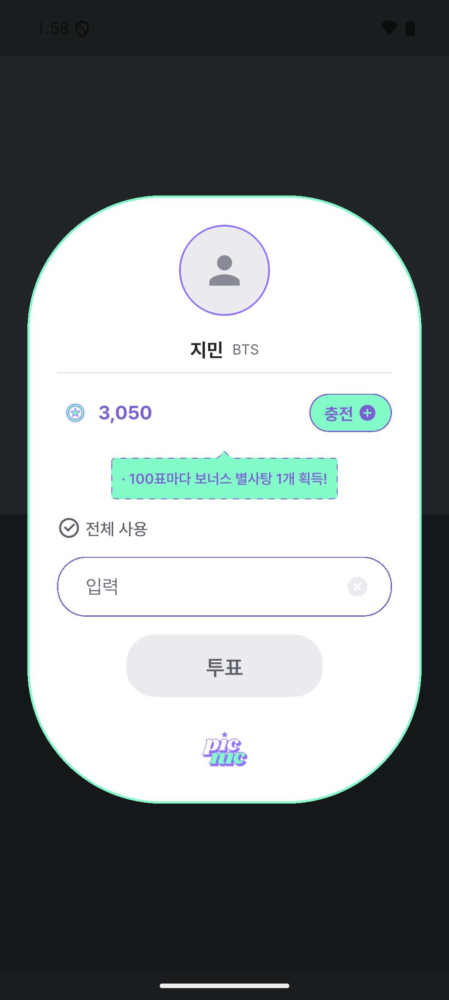
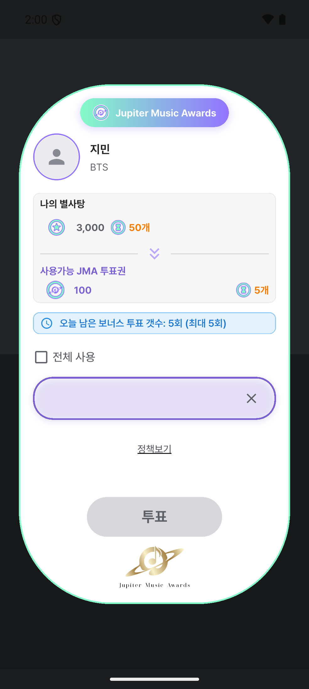
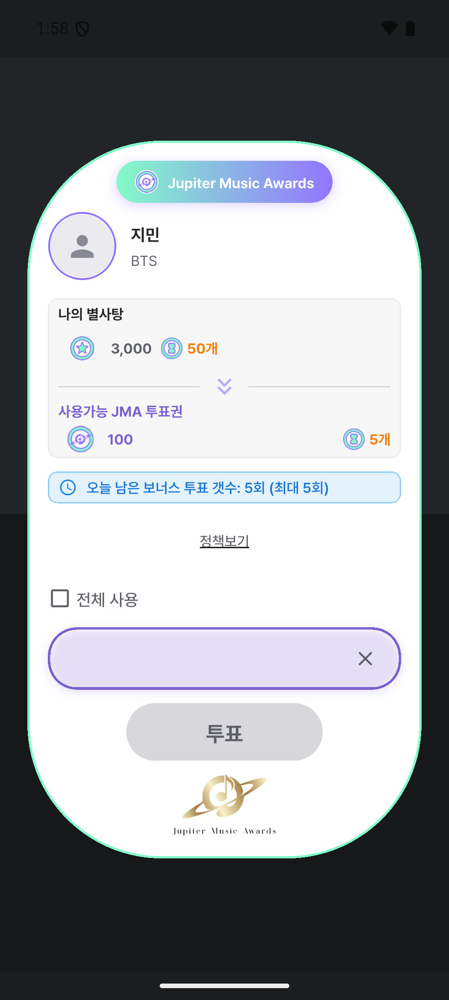
4. 한 줄 요약
| 뷰포트 | 팝업 | BEFORE 에서 안 보이는 것 | AFTER |
|---|---|---|---|
| flip-flex 412 × 500 dp | 일반 | 금액 입력란 전체 + 전체 사용 행 하단 잘림 | 3종 모두 온전 |
| JMA | 입력란 · 투표 버튼 (전체 사용은 모서리에 잘림) | 3종 모두 온전 | |
| phone-landscape 851 × 393 dp | 일반 | 전체 사용 · 입력란 · 투표 버튼 전부 | 3종 모두 온전 |
| JMA | 전체 사용 · 입력란 · 투표 버튼 전부 | 3종 모두 온전 | |
| tablet-third 375 × 834 dp | 일반 | 없음 (원래 정상) | 정상 유지 · 보너스 밴드 위치만 이동 |
| JMA | 없음 (원래 정상) | 정상 유지 · 정책보기 위치만 이동 |
5. 재현 절차
- 에뮬레이터 부팅 후
adb -s emulator-5554 shell wm size <W>x<H>,wm density 420. - 임시 진입점을 target 으로 debug APK 빌드 (위 dart-define 4개), 설치. 서명이 다른 기존 앱이 있으면 먼저
uninstall. am force-stop→am start로 콜드 스타트, 상단 절반 탭 → 일반 팝업 / 하단 절반 탭 → JMA 팝업.adb -s emulator-5554 exec-out screencap -p > <파일>.- before 는 다이얼로그 4개 파일만 부모 커밋으로 되돌려(
voting_dialog.dart,jma_voting_dialog.dart,voting_dialog_widgets.dart,large_popup.dart) 재빌드 후 동일 절차. 캡처 후git checkout HEAD -- picnic_lib/로 복원.